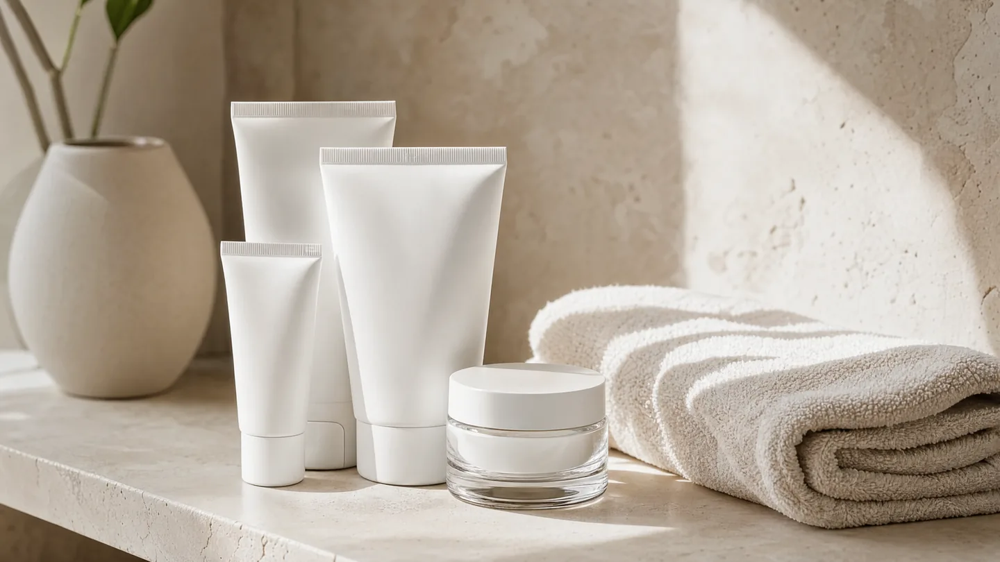

Aknetherapie · Chemnitz
Akne behandeln
in Chemnitz
Akne ist keine Frage mangelnder Hygiene und wächst sich nicht immer aus. Sie ist behandelbar – und je früher, desto geringer das Risiko bleibender Narben.
Der Zeitpunkt entscheidet über die Narben
Viele versuchen es jahrelang mit Drogerieprodukten, bevor sie zum Hautarzt gehen. Das ist verständlich – kostet aber genau die Zeit, in der sich Narben bilden, die später deutlich aufwendiger zu behandeln sind.
Akne entsteht durch ein Zusammenspiel aus vermehrter Talgproduktion, Verhornungsstörung, Bakterien und Entzündung. Welche dieser Komponenten bei Ihnen im Vordergrund steht, bestimmt die Behandlung – deshalb steht am Anfang die Einordnung von Form und Schweregrad, nicht das Rezept.
Bei leichteren Formen führen äußerliche Therapien häufig zum Ziel, brauchen aber Geduld: Sichtbare Besserung stellt sich meist erst nach einigen Wochen ein. Bei schwerer, entzündlicher oder vernarbender Akne kommt eine innerliche Behandlung in Betracht, unter anderem mit Isotretinoin. Diese Therapie ist wirksam, aber verschreibungspflichtig und an strenge Auflagen gebunden – dazu gehören regelmäßige Laborkontrollen und, bei gebärfähigen Patientinnen, ein verbindliches Programm zur Schwangerschaftsverhütung, weil der Wirkstoff das ungeborene Kind schädigt.
Ein Einblick

Symbolbild einer vergleichbaren Behandlung.
So läuft es ab
Befund
Wir beurteilen Akneform, Schweregrad und Verteilung – und fragen, was Sie bisher versucht haben.
Therapieplan
Gemeinsam legen wir fest, womit begonnen wird und in welchem Zeitraum eine Besserung realistisch ist.
Behandlung
Die Therapie läuft über Wochen bis Monate. Wichtig ist, sie durchzuhalten – auch wenn zu Beginn wenig passiert.
Kontrolle & Anpassung
Wir sehen uns in festen Abständen, passen an und behalten bei einer Systemtherapie Laborwerte und Verträglichkeit im Blick.
Wichtig zu wissen
Die hier beschriebenen Therapien sind verschreibungspflichtig. Ob sie für Sie in Frage kommen, lässt sich nur nach ärztlicher Untersuchung und Aufklärung entscheiden. Zu Isotretinoin gehören verpflichtende Sicherheitsmaßnahmen, insbesondere zur Schwangerschaftsverhütung. Wir klären Sie darüber vor Therapiebeginn ausführlich und persönlich auf.
Was wir behandeln
Akne – Ihre Fragen
Ab wann sollte ich zum Hautarzt?
Spätestens, wenn frei verkäufliche Mittel über mehrere Monate nichts bringen, wenn die Akne entzündlich ist oder wenn erste Narben entstehen. Warten kostet in diesem Fall Substanz.
Wie lange dauert es, bis ich etwas sehe?
Bei äußerlichen Therapien meist mehrere Wochen. Anfangs kann sich das Hautbild sogar kurz verschlechtern – das ist bekannt und kein Grund abzubrechen.
Liegt es an meiner Ernährung?
Bei einzelnen Menschen spielen Ernährungsfaktoren eine Rolle, bei vielen nicht. Akne ist keine Folge falschen Essens oder mangelnder Hygiene.
Was ist mit Aknenarben?
Narben behandeln wir getrennt von der akuten Akne – und erst, wenn die Entzündung zur Ruhe gekommen ist. Was möglich ist, besprechen wir individuell.
Bekomme ich gleich beim ersten Termin eine Systemtherapie?
In der Regel nicht. Davor stehen Befund, Aufklärung und je nach Therapie Voruntersuchungen.
Termin vereinbaren
Vereinbaren Sie einen Termin – je früher Akne behandelt wird, desto besser lässt sich Narbenbildung vermeiden.
Leipziger Straße 137, 09113 Chemnitz · Mo – Do 08:00–18:00 · Fr 08:00–14:00
Hinweis: Diese Seite dient der allgemeinen Information und ersetzt keine ärztliche Beratung oder Diagnose. Angaben zu verschreibungspflichtigen Therapien dienen ausschließlich der Information und stellen keine Empfehlung eines bestimmten Arzneimittels dar. Ob und in welchem Umfang Ihre Krankenkasse eine Leistung übernimmt, klären wir im persönlichen Gespräch. Das Foto im Kopfbereich zeigt unsere Praxisräume in Chemnitz. Abgebildete Symbolfotos zeigen weder Patientinnen und Patienten unserer Praxis noch tatsächlich erzielte Behandlungsergebnisse.